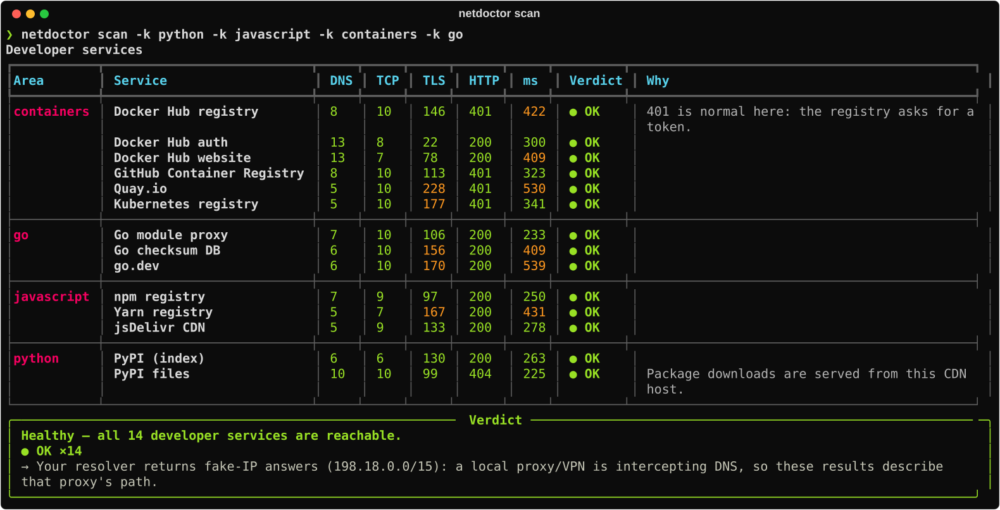
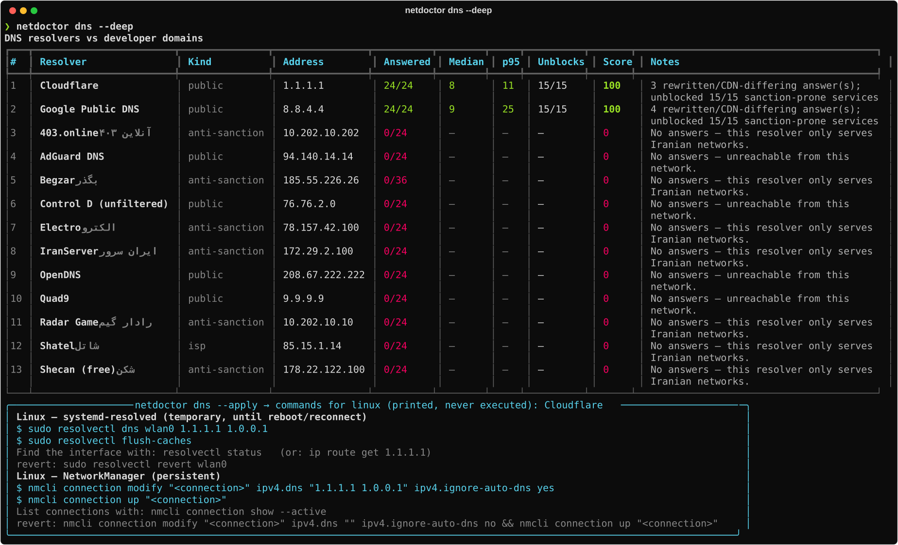
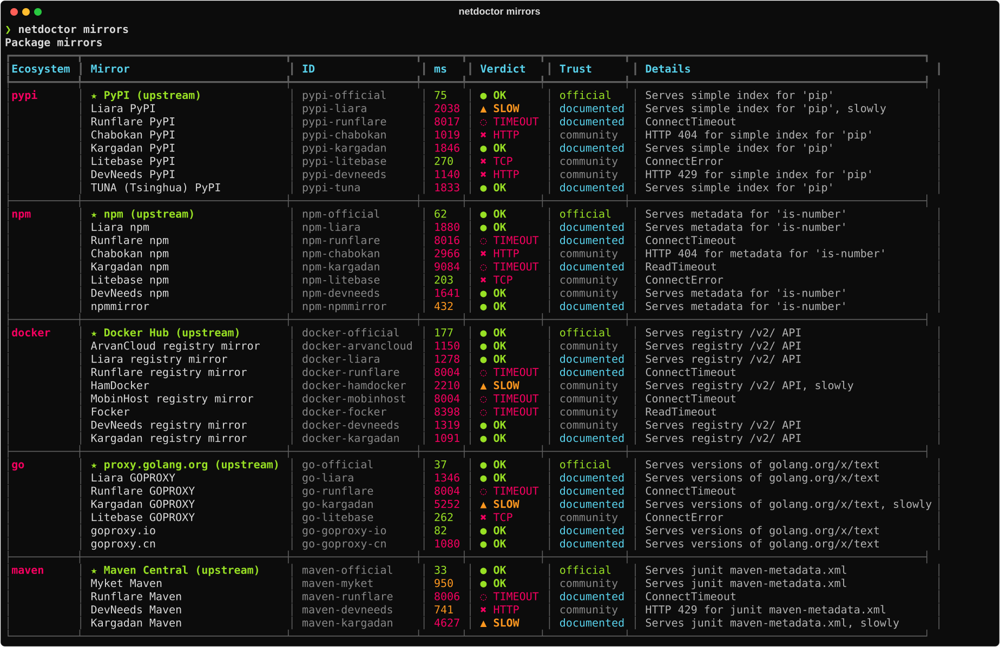

Stop guessing why
pip, npm & docker fail.
دیگر حدس نزنید چرا
pip، npm و docker کار نمیکنند.
netdoctor is a connectivity doctor and mirror switcher for developers in Iran. It shows whether a failure is a DNS hijack, SNI filtering or a sanction page, finds the DNS resolver and package mirror that work today, and switches your tools to them with automatic backups. netdoctor ابزاری برای برنامهنویسهای داخل ایران است که مشکل اتصال را تشخیص میدهد و میرورها را عوض میکند. نشان میدهد خطا از دستکاری DNS است، از فیلترینگ روی SNI یا از صفحهٔ تحریم. بعد DNS و میرور بستهٔ نرمافزاریای را که امروز کار میکند پیدا میکند و ابزارهایتان را با پشتیبانگیری خودکار روی آن تنظیم میکند.
pipx install git+https://github.com/mrzroot/netdoctor-ir.git
Real output, captured on a build server outside Iran (that's why it's all green). On an Iranian connection you'd see ⊘ SANCTIONED or ✖ FILTERED rows. خروجی واقعی برنامه، گرفتهشده روی سروری خارج از ایران (برای همین همهچیز سبز است). روی اینترنت ایران ردیفهایی مثل ⊘ SANCTIONED یا ✖ FILTERED هم میبینید.
Everything you check by hand, in one commandهر چه دستی چک میکردید، با یک دستور
Async, typed Python with no root, no telemetry and no surprises. It measures and configures; it never bypasses anything by itself.پایتون async و تایپشده؛ بدون نیاز به root، بدون تلهمتری و بدون غافلگیری. اندازه میگیرد و تنظیم میکند و خودش هیچ محدودیتی را دور نمیزند.
netdoctor scan
Checks 38 developer services (PyPI, npm, Docker Hub, Go proxy, GitHub, Google Fonts, Maven, apt…) through DNS → TCP → TLS → HTTP, and explains every failure.۳۸ سرویس پرکاربرد توسعه (PyPI، npm، Docker Hub، Go proxy، گیتهاب، Google Fonts، Maven، apt و…) را در مراحل DNS، TCP، TLS و HTTP بررسی میکند و دلیل هر خطا را توضیح میدهد.
netdoctor dns --deep
Ranks 13 public and Iranian anti-sanction resolvers (Shecan, 403.online, Begzar, Electro, Radar…) by success and latency, and shows which one actually unblocks Docker Hub.۱۳ DNS عمومی و ضدتحریم ایرانی (شکن، ۴۰۳، بگذر، الکترو، رادار و…) را بر اساس موفقیت و سرعت رتبهبندی میکند و نشان میدهد کدامیک واقعاً Docker Hub را باز میکند.
netdoctor mirrors --write
Checks 37 PyPI, npm, Docker, Go and Maven mirrors by verifying their content, then writes pip.conf, .npmrc, daemon.json and GOPROXY, showing the diff first.۳۷ میرور PyPI، npm، Docker، Go و Maven را با بررسی محتوای واقعی آزمایش میکند. بعد pip.conf، .npmrc، daemon.json و GOPROXY را مینویسد و قبلش تغییرات را نشان میدهد.
netdoctor restore
Every write is backed up automatically. One command puts every file back exactly as it was.از هر تغییری خودکار پشتیبان گرفته میشود. با یک دستور همهچیز دقیقاً به حالت قبل برمیگردد.
netdoctor report --md
A shareable Markdown or JSON report you can paste into an issue or a team chat. It doesn't include your IP address.گزارش Markdown یا JSON که میتوانید در issue یا گروه تیمی بگذارید. IP شما در آن نیست.
netdoctor tui
An optional live dashboard built with Textual, with auto-refresh and rescan on a single key.داشبورد زندهٔ اختیاری با Textual؛ بهروزرسانی خودکار و اسکن دوباره با یک کلید.
How it worksچطور کار میکند
Each service goes through four probes. netdoctor stops at the first failure and classifies what it saw using fingerprints from an open YAML catalog.هر سرویس از چهار مرحله میگذرد. netdoctor در اولین خطا میایستد و آنچه دیده را با امضاهای یک فهرست باز YAML دستهبندی میکند.
| Verdictحکم | What netdoctor sawآنچه netdoctor دید |
|---|---|
| ● OK / ▲ SLOW | Expected status code (a Cloudflare bot challenge counts as reachable).کد وضعیت مورد انتظار (چالش ضدربات Cloudflare هم «در دسترس» حساب میشود). |
| ⊘ SANCTIONED | HTTP 403/451 with a known sanction page: Docker export control, Google "your client does not have permission", OpenAI unsupported country, Cloudflare 1009, CloudFront geo-block…HTTP 403/451 همراه با صفحهٔ تحریم شناختهشده: export control داکر، پیام «your client does not have permission» گوگل، کشور پشتیبانینشدهٔ OpenAI، خطای 1009 کلودفلر، geo-block کلادفرانت و… |
| ✖ FILTERED | DNS hijack, TLS reset or stall after TCP connect, certificate interception, or a block page / redirect to peyvandha.ir.دستکاری DNS، قطع یا گیر کردن TLS بعد از TCP، رهگیری گواهی، یا صفحهٔ مسدودسازی و هدایت به peyvandha.ir. |
| ⊘ FORBIDDEN | 403 without a known marker, probably a geo-block. Please contribute the signature!۴۰۳ بدون امضای شناختهشده، احتمالاً geo-block. امضایش را به پروژه اضافه کنید! |
Quick startشروع سریع
Python 3.10+ on Linux, macOS or Windows. netdoctor isn't on PyPI yet, so install it from GitHub.پایتون ۳٫۱۰ به بالا روی لینوکس، مک یا ویندوز. فعلاً روی PyPI نیست و از گیتهاب نصب میشود.
# install pipx install git+https://github.com/mrzroot/netdoctor-ir.git # diagnose netdoctor scan netdoctor scan --resolver shecan netdoctor dns --deep # switch mirrors (diff + backup), then undo netdoctor mirrors --write --dry-run netdoctor mirrors --write netdoctor restore
Safe by designامن از پایه
Never touches system settingsتنظیمات سیستم را تغییر نمیدهد
dns --apply prints the commands for your OS (and --script saves them). You review them and run them yourself.dns --apply فقط دستورهای سیستمعامل شما را چاپ میکند (و --script ذخیرهشان میکند). خودتان بررسی و اجرا میکنید.
No root, no telemetryبدون root و بدون تلهمتری
On Linux, the Docker config is staged in your home directory along with the sudo cp command. Traffic only goes to the catalog's own endpoints.روی لینوکس، تنظیمات داکر در پوشهٔ خانه آماده میشود و دستور sudo cp هم کنارش چاپ میشود. ترافیک فقط به آدرسهای داخل فهرست میرود.
Honest catalogفهرست صادقانه
Every mirror and resolver is labelled official, documented or community-reported, with a source link.هر میرور و DNS برچسب official، documented یا community-reported و لینک منبع دارد.
Real outputخروجی واقعی
Captured with scripts/make_screenshots.py on the build server outside Iran. Iranian resolvers only answer inside Iran, and many Iranian mirrors refuse foreign clients, so run it yourself to see your real picture.با scripts/make_screenshots.py روی سرور خارج از ایران گرفته شده. DNSهای ایرانی فقط داخل ایران پاسخ میدهند و بسیاری از میرورهای ایرانی کاربر خارجی را نمیپذیرند. برای دیدن وضعیت واقعی، خودتان اجرا کنید.


FAQپرسشهای پرتکرار
Does netdoctor bypass filtering or sanctions?آیا netdoctor فیلترینگ یا تحریم را دور میزند؟
No. It's a diagnostic tool: it measures reachability and, if you ask, points your package managers at public mirrors and prints DNS settings. It isn't a VPN or a proxy.خیر. ابزاری تشخیصی است: دسترسی را اندازه میگیرد و در صورت درخواست شما، ابزارهای مدیریت بسته را روی میرورهای عمومی تنظیم میکند و تنظیمات DNS را چاپ میکند. VPN یا پروکسی نیست.
How do I add a mirror or a resolver?چطور میرور یا DNS جدید اضافه کنم؟
Edit netdoctor/data/mirrors.yaml or resolvers.yaml, run netdoctor catalog validate, and open a PR with a source link. Output from inside Iran is the best evidence.فایل netdoctor/data/mirrors.yaml یا resolvers.yaml را ویرایش کنید، netdoctor catalog validate را اجرا کنید و یک PR با لینک منبع بفرستید. خروجی گرفتهشده از داخل ایران بهترین مدرک است.
Is a community-reported mirror safe?آیا میرورهای community-reported امناند؟
It means nobody has confirmed the entry from inside Iran yet. Any mirror can see what you download, so prefer official and documented entries and verify hashes or lockfiles.یعنی هنوز کسی آن را از داخل ایران تأیید نکرده. هر میروری میبیند چه چیزی دانلود میکنید؛ موارد official و documented را ترجیح دهید و hash یا lockfile را بررسی کنید.
Does this page load in Iran?این صفحه در ایران باز میشود؟
This page makes no third-party requests: no Google Fonts, no CDNs, no analytics. Everything is served from GitHub Pages.این صفحه هیچ درخواستی به سرویسهای دیگر نمیفرستد: نه Google Fonts، نه CDN، نه آمارگیر. همهچیز از GitHub Pages میآید.